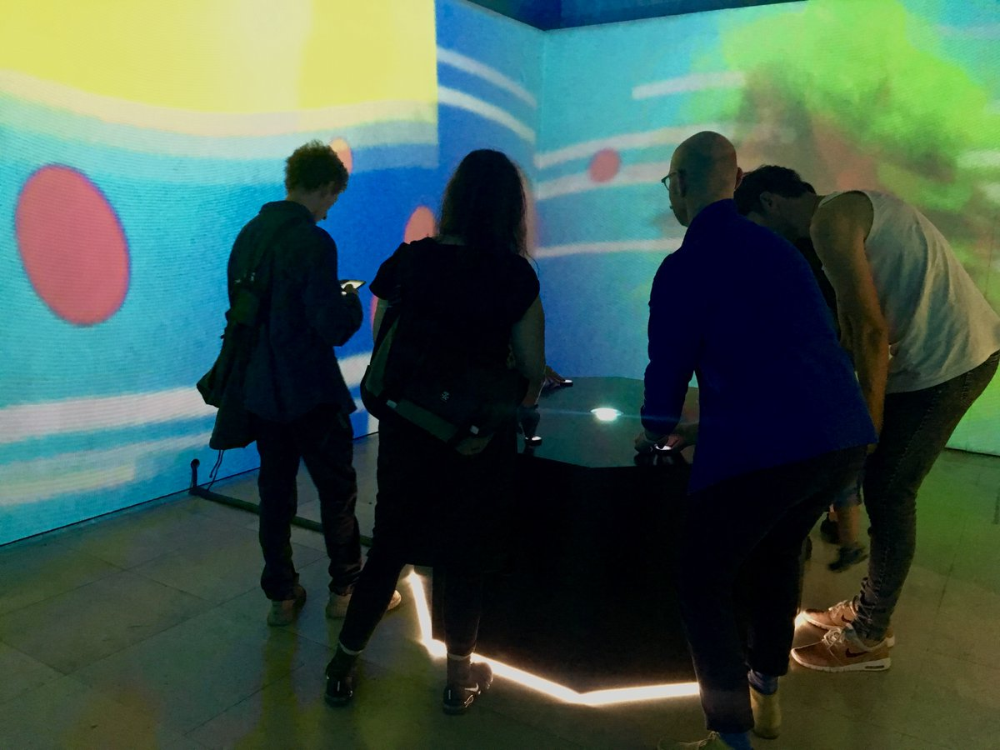
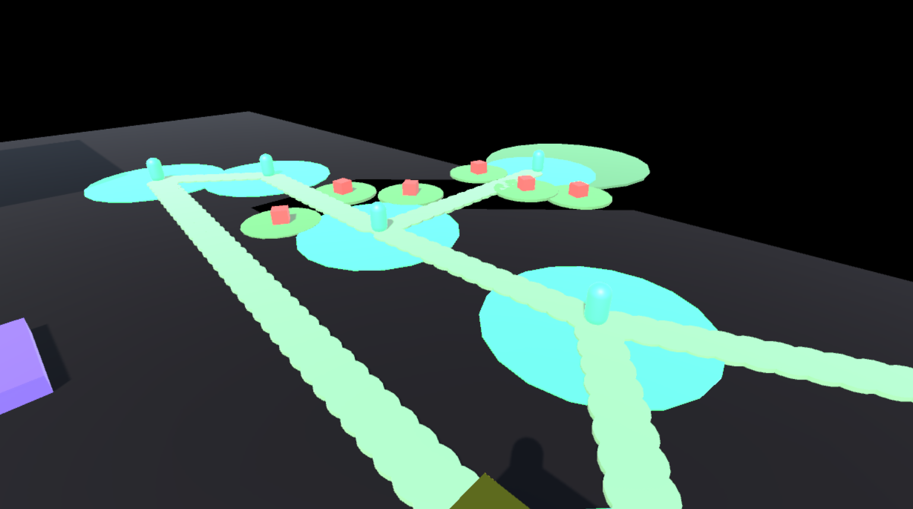
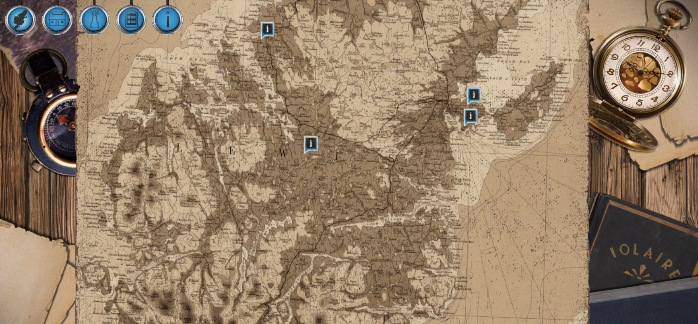

About My Time at The Biome Collective
> My Role --Data Analysis. --Mechanic and feature implementation and programming. --Mechanic Design. --Tool Development. --Bug Testing and reporting.
> About the Projects Created in Unity Game Engine. Coded in C# Biome Collective Projects/ other:
Data Analysis
Once I had completed my Masters Course at Abertay University, I sought out some additional work to help gain some experience with what it would be like to work in the games industry. I contacted The Biome Collective, a small independent games studio based in Dundee. A collective of contractors who work on various projects involving Creative Dundee, NEoN Digital Arts and many more. After a few meetings explaining that I was looking for some experience, I was set up with a desk and a few projects to help work on.
The first project I was asked to work on was some data analysis for Biome's "Shpeel" project. An interactive art installation that was designed to help individuals start a conversation about Mental Health. The installation consists of a platform in the centre of a room with eight buttons, when a button is pressed images are projected from the platform onto a dome installed on the rooms roof, this projects the images around the walls of the room. Each button represents a different mood or mental state.
My task was to take the information generated by the project, (what button was pressed at what time) and display that information in an understandable format. The Biome Collective wished to know how many times opposite buttons were pressed together (as this would create a unique image and sound, depending on which opposites were pressed) and when all eight buttons were pressed at the same time.
The data was presented in excel documents with tens of thousands of entries, showing which button was pressed and at what time. As sorting through this information would be impossible to sort correctly. I created a simple program which would read a text file with the information inside it, prompt the user to input which Buttons they wished to test against each other; i.e. (how many times were buttons 1 and 8 pressed at the same time) and then would output that number. Although a simple program, this allowed for the sorting of tens of thousands of lines of data and made the information they wished to find simple and understandable.
Feature and Mechanics Programming
The second project I was asked to work on was based on Biome's own IP "Garden" a VR interactive art game, where the user explores a virtual landscape collecting seeds, that when planted, generated musical notes that help a central "Mother plant" grow. I was tasked with playing through the game and seeing where the project could be improved or expanded upon. I was asked to prototype my own ideas and concepts that wouldn't take away from "Garden's" unique feel but rather build upon them.
Working with the designers of the project, I helped develop a few simple mechanics in the Unity engine which focused on planting flowers which helped the player navigate through the game world. These consisted of flowers that would dispel a shadow which prevented the player from progressing, creating paths for the player to walk on and creating bridges for the player to traverse over gaps. Although simple mechanics, these helped build upon the original concept of the game and where the project could be taken further. Alongside this, to help the designers on the project with level creation and design, I developed a Unity custom editor which would allow them to use the mechanics I implemented without the need to touch any code.
Bug Testing/Reporting
While at my time with The Biome Collective, I was approached by a former lecturer of mine Dr. Iain Donald, who asked me to do some Bug testing for a project he had been working on; The Iolaire Project. An interactive historical teaching tool, designed to inform and educate the player on the tragedy of the HMY Iolaire which sank on the 1st of January 1919. I was tasked with playing through the project and delivering detailed bug reports to help the designers and programmers on the project amend any faults I found.
Credits: Biome Collective: www.biomecollective.com NEoN Digital Arts Festival: www.northeastofnorth.com Iolaire Project: www.iolaire.itch.io
Images
- 
- 
- 